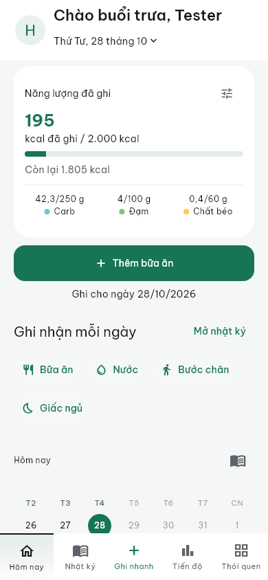
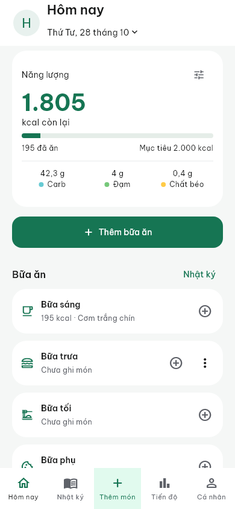
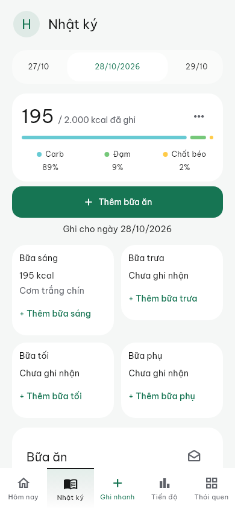
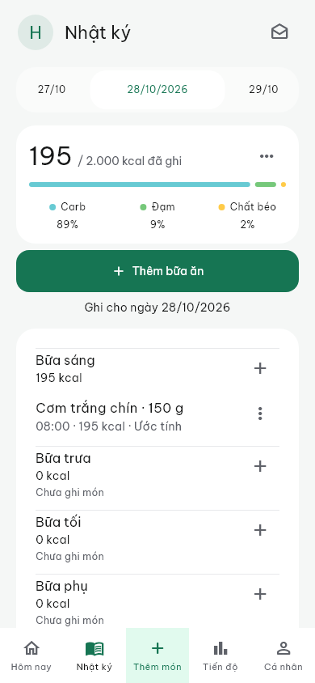
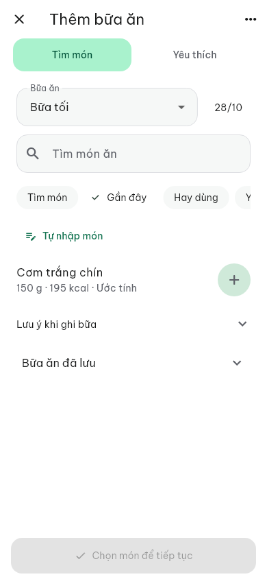

HealthMate · Giao diện theo dõi dinh dưỡng
Ưu tiên kcal, bữa ăn và thao tác thêm món. Ảnh widget với dữ liệu kiểm thử cố định ở 390×844, không phải nghiệm thu trên điện thoại.
Hôm nay
Trước
Sau
Nhật ký
Trước
Sau
Thêm món
Nút + mở thẳng form. Tìm kiếm ở đầu màn hình, lưu ở cuối. Công cụ phụ nằm trong dấu ⋯.
